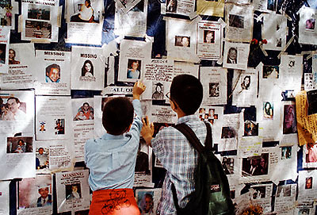
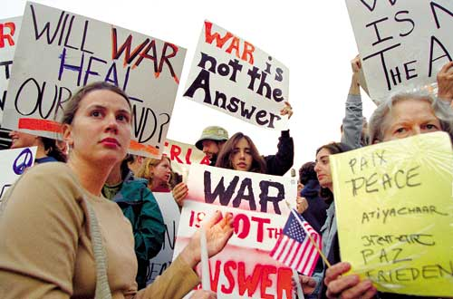

Bernard Desjardins, 15 Septembre 2001, 12h00
Bonjour à tous,
Vous me voyez bien surpris ce matin de constater que mon petit texte rédigé
à la hâte ait rejoint un auditoire aussi impressionnant et soulève
autant de commentaires. Mais puisqu'il s'agit d'un échange d'idées,
processus de réflexion collective auquel je crois profondément,
permettez-moi d'y ajouter
encore un grain de sel.
Tout d'abord, loin de moi l'idée de personnifier tous les américains dans un seul et même Goliath, la généralisation étant un grand piège qui guette d'ailleurs tout le monde présentement. Loin de moi aussi l'idée d'être anti-américain, puisque premièrement je considère que c'est une forme de racisme au même titre qu'être anti-juif ou anti-arabe. En fait, je ne me distingue pas des américains, dans le fond j'en suis un, je baigne tout à fait dans la même culture et mes valeurs personnelles sont sélectionnées à même le " réservoir standard de valeurs nord-américaines ".

L'expression " les gens qu'ils piétinent " que j'ai utilisée est en fait un peu forte, je le reconnaît, et surtout, est insultante pour les millions d'américains pour qui la générosité et l'entraide sont des valeurs centrales, comme nous pouvons d'ailleurs le constater ces jours. Je m'excuse également du mépris qui peut sembler se dégager de ce commentaire, alors que des milliers de gens pleurent des amis disparus dans un acte tout à fait barbare.Mais (il y a un " mais "...), ceci ne m'empêche pas de penser que maintenant on a un sérieux problème de stabilité internationale, et qu'on ne peut l'attribuer seulement à des causes externes. L'Islam et des fous illuminés comme Oussama Ben Laden sont des candidats idéaux et faciles pour servir de boucs émissaires, entre autres parce qu'on ne les reconnaît pas dans notre "réservoir standard de valeurs ". Les raisons qu'ils invoquent pour justifier leurs actes nous apparaissent totalement irrationnelles et irréelles, d'autant plus qu'elles nous parviennent à travers le voile des médias occidentaux. De fait les raisons qui motivent ces gens sont tout aussi incompréhensibles pour nous que le sont pour le peuple " ordinaire "du moyen-orient les raisons qui poussent l'occident à intervenir sans arrêt dans leurs affaires internes.
Ceux qui me connaissent savent que j'ai travaillé beaucoup ces dernières années dans des pays arabes et que j'en ai soupé de la mentalité musulmane. Malgré tout, avec un peu de tolérance, on arrive à comprendre que derrière le moule culturel de chacun d'entre eux, il y a un humain tout aussi ordinaire que chacun de nous tous, avec son degré (toujours variable selon les individus) de bonne volonté et de bonté. Il a tout simplement une perception légèrement différente de ce qui est bien et de ce qui est mal. Pour paraphraser Rousseau, " L'homme est foncièrement bon, c'est la société qui le corromps ", et chaque société a développé à travers les âges sa façon propre de corrompre.
Permettez-moi de plus d'apporter un bémol important à l'article
que nous a fait suivre notre camarade Michel Barre. L'aide américaine
(et occidentale en général, je nous met dans le même bain),
ou du moins, celle qui provient de l'État civil ou militaire (organisations
humanitaires exclues), est très sélective. En fait ce qu'on protège,
ce sont toujours des intérêts américains (ou occidentaux).
Combien d'argent avons-nous injecté pour sauver des folies meurtrières
le Rwanda, le Burundi, pays pratiquement sans ressources et sans position stratégique?
Des miettes. Quand aux prêts sans intérêts et autres dons
de toute forme pour toute sorte de catastrophes, tous ceux qui naviguent dans
le monde de l'aide internationale savent bien qu'au moins 90% de l'argent prêté
ou donné retourne aux pays occidentaux sous forme de contrat de reconstruction
ou autre service, lesquels contrats sont toujours accordés à des
firmes provenant du ou des pays " donataires ".
Dont celle pour qui je travaille, et dont celle pour qui tu travailles, cher
Guy. Même s'il est vrai que les pays qui bénéficient de
ces services en conserve le fruit, ils en paient le prix largement par leur
dépendance, leur
soumission et l'ouverture " obligée " de leur marché
aux entreprises américaines et occidentales. Ce qu'on appelle d'ailleurs
fort ironiquement l'ouverture au " libre marché "...

Quand je dit " piétine ", c'est précisément à cette forme de rouleau compresseur auquel je fait allusion, soit l'invasion commerciale et culturelle du monde par l'occident, USA en tête. Invasion douce, sans violence. Irréversible. Pratiquement impossible à combattre, parce que faite au nom de la liberté et de la démocratie. Qui veut s'y opposer, à part quelque fous illuminés? À part quelques David machiavéliques cachés dans leurs cavernes avec leur frondes?Je peux paraître révolutionnaire, gauchiste et même anarchiste ce matin...Du genre à monter au barricades lors des sommets du G8... Rassurez-vous il n'en est rien. Au contraire, je crois profondément à la libre entreprise, à la compétition et au commerce international, mais à condition qu'il y ait chance égale pour tous. Je crois aussi très peu aux frontières et aux barrières, lesquelles sont souvent artificielles, mais par contre je crois profondément aux différences culturelles et à leur respect. Par contre je me méfie de toute forme de patriotisme, qu'il soit américain, canadien, québécois, israélien, palestinien, albanais ou n'importe, parce qu'en touchant l'émotivité des gens il engendre des réactions émotives comme la vengeance et la haine. Et j'ai peur que Goliath joue la carte du patriotisme.
Bernard